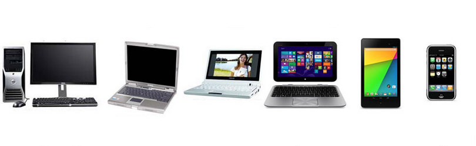

Какие компьютеры бывают, виды и типы компьютеров

+7(961)-637-44-44
Содержание
- Настольные компьютеры или десктопы
- Неттопы
- Моноблоки
- Ноутбуки и нетбуки
- Планшеты и планшетные ноутбуки
- Карманные типы компьютеров и смартфоны
- Современные игровые приставки
- Вычислительные серверы
- Суперкомпьютеры
Выделяются несколько основных типов устройств:
Самыми высокопроизводительными представителями персональных компьютеров являются именно настольные компьютеры. Настольным компьютер таким называется потому, что местом размещения служит письменный, а в последующим после некоторых изменений - компьютерный стол.
Основным компонентом тут считается системный блок, обычно представляющий из себя прямоугольную коробку, чаще всего находящуюся или в верхней части стола или же в нижней. К системному блоку подключается монитор, клавиатура и мышь, все эти компоненты взаимодействуют между собой.
Системный блок является модульным устройством, что означает возможность замены каждого комплектующего – модуля, самостоятельно, тем самым изменив конфигурацию под себя.
Неттоп это минимизированная версия системного блока, кроме размеров отличается меньшим
энергопотреблением и выделением шума, и как следствием в большинстве случаев меньшей производительностью.
Но всё это способствует отличной интеграцией с интерьером офиса или дома.
Моноблок является так же стационарным компьютером, но без видимого системного блока. Каркасом для такого вида компьютеров как моноблок служит один общий корпус с монитором. Все комплектующие размещаются в тыловой части, за дисплеем, что создаёт определённую эстетичность для работы за компьютером. Что такое моноблок и моноблочный компьютер, можно уточнить в одноимённой статье.
Виды портативных персональных компьютеров
Что является портативным устройством? Портативный - значит переносной, а в нашем случае мобильность компьютерам обеспечивает их сравнительно с настольным компьютером меньший размер и ёмкий аккумулятор. В большинстве случаев такой тип компьютеров для увеличения часов автономной работы ограничивает себя в производительности, но и этих возможностей хватает для выполнения определённых, собственно, как и для любого компьютера, вычислительных операций.
Ноутбуки - это компьютеры, которые можно без труда переносить, имеют возможность автономной работы, которая возможна именно благодаря батареи, как и у других видов портативных компьютеров. Кроме этого отличительной чертой от стационарных компьютеров делает наличие совмещённых комплектующих, дисплея клавиатуры в одном корпусе. А способность складываться делает их ещё компактнее.
Нетбуки же, это всё те же ноутбуки, имеющие не только меньшие размеры и больше времени работы от аккумуляторной батареи, но и менее высокую производительность, что не даёт возможности ими использовать ресурсоёмкие приложения.
Эти наколенные виды компьютеров, основанные на книжном принципе закрытия и открытия, предоставляют хоть и не высокую, но достаточную производительность для выполнения нужд пользователя.
Планшеты, это переносные компьютеры, разделившие потребности пользователей в КПК со смартфонами, в одном корпусе вычислительный потенциал для просмотра интернет страниц, видео и прослушивания музыки, основой тут является такое устройство ввода, как сенсорный дисплей - Touchscreen (тачскрин), являются настоящими помощниками, а в некоторых ситуациях удобнее ноутбука за счёт меньших размеров.
У планшетных ноутбуков кроме тачскрина так же, как и у ноутбука, имеются клавиатура и в зависимости от модели может или складываться, или же выдвигаться.
Основной задачей данного вида портативного устройства является именно выход и использование интернета, хоть и присутствуют основные мультимедийные возможности. Для таких мини компьютеров время автономной работы важнее производительности, если сравнивать со всё тем же Desktop.
Если раньше отличия между смартфонами и КПК (карманными персональными компьютерами) были действительно заметны, то сейчас средне статистический смартфон выполняет те же функции, а популярность КПК уже не та, что ранее, но все же своих пользователей данный вид компьютера имеет.
Так же, как и другие виды компьютеров, являющиеся представителями портативных устройств, зависимы от времени работы аккумулятора. Обладают, довольно небольшими размерами, что благоприятно сказывается на возможности их иметь всегда под рукой, что противоположно производительности. Благодаря более низкому разрешению есть возможность использовать такие устройства для просмотра видео и фото, пусть они ни лучшие плееры, но такой возможности не лишены, а функции фото и видео съёмки являются хорошим плюсом.
Эти устройства работают от батареи, а их размеры благоприятствуют возможности иметь их постоянно при себе. Главное отличие между сегодняшними моделями смартфонов и КПК, в том, что первый выполнят кроме вычислительной функции, функцию телефона. Современные модели в обязательном порядке имеют такое устройство ввода, как сенсорный дисплей.
Современные игровые приставки так же являются компьютерами, они несут в себе компьютерную составляющую, а кроме главной функции игра – они справляются и с другими развлекательными задачами. Бытовые устройства имеют микропроцессоры, который по сути тоже является одной из составляющей компьютера.